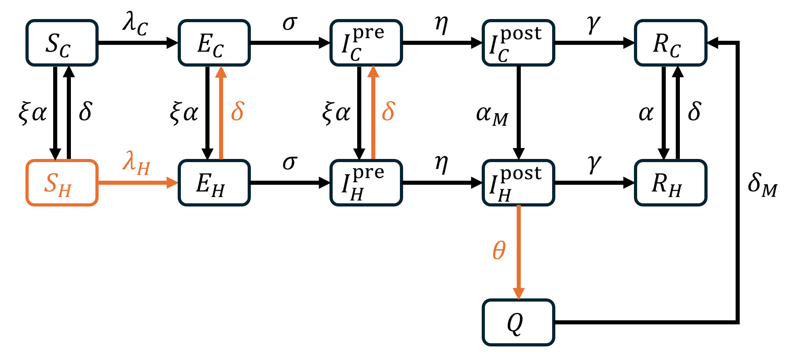
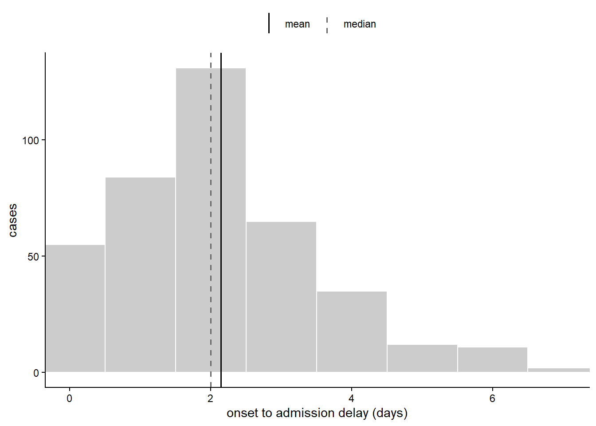
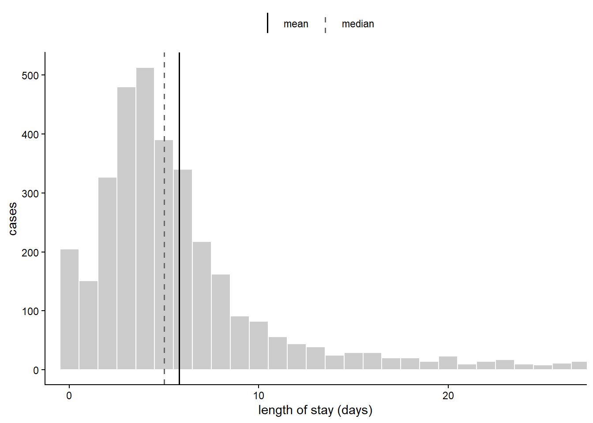
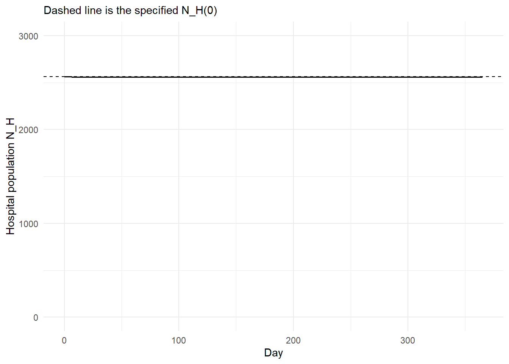
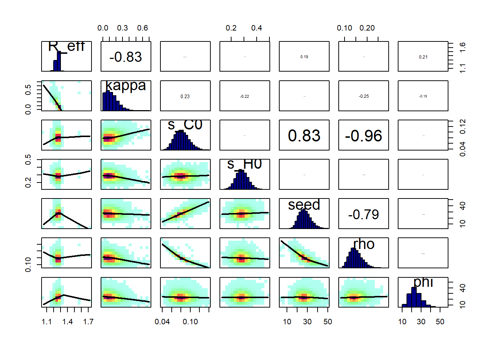
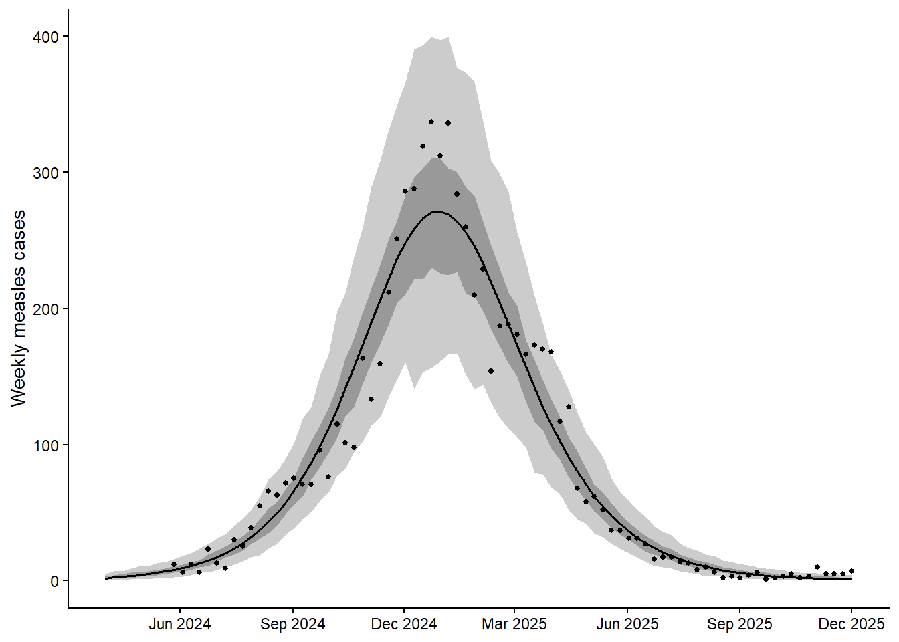
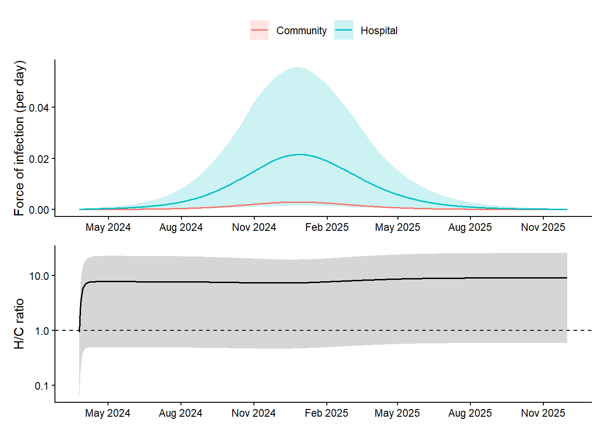
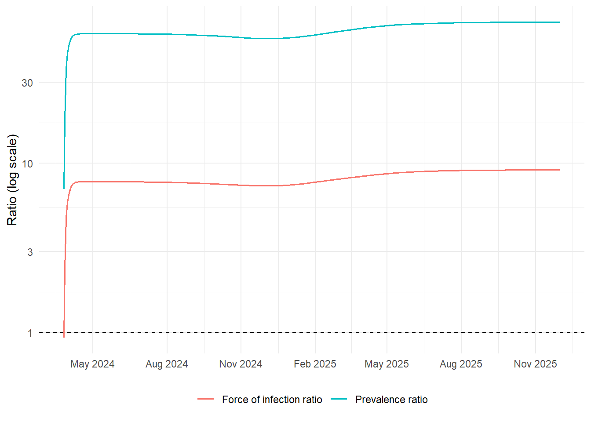
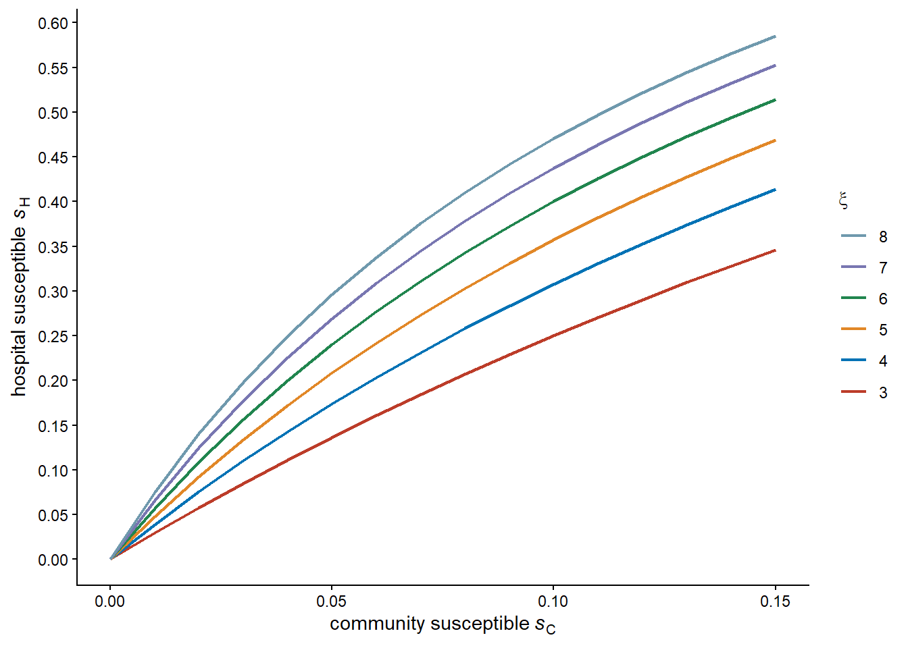

path2data <- paste0("C:/Users/ongph/github/data/dphil_res3")Result 3: Hospital-community model
Constant
Path to data:
Files names:
# Case notification
case_hcmc <- "measles_hcmc_24-25.rds"
case_hn <- "measles_hn_final.rds"
case_ch2 <- "clinical_cases_ch2.rds"
# Census of HCMC
census_file <- "census2019_hcm.rds"
# Campaign HCMC
campaign_file <- "campaign_hcmc_2425.csv"
# CH1 outpatient
ch1_out_file <- "ch1_visit_day.rds"Packages
required <- c("tidyverse", "fitdistrplus", "ggsci", "BayesianTools", "deSolve", "BayesianTools", "patchwork")
# Installing those that are not installed yet:
to_install <- required[! required %in% installed.packages()[, "Package"]]
if (length(to_install)) install.packages(to_install)
# Loading the packages for interactive use:
invisible(sapply(required, library, character.only = TRUE))Functions
plot_interval <- function(data, var, trim = 0.99,
xlab = "days", ylab = "cases") {
x <- dplyr::pull(data, {{ var }})
x <- x[!is.na(x)]
stats <- tibble(stat = c("mean", "median"),
value = c(mean(x), median(x)))
ggplot(data, aes({{ var }})) +
geom_histogram(binwidth = 1, boundary = -0.5,
fill = "grey80", colour = "white") +
geom_vline(data = stats, aes(xintercept = value, colour = stat, linetype = stat),
linewidth = 0.7) +
scale_colour_manual(values = c(mean = "black", median = "grey40")) +
scale_linetype_manual(values = c(mean = 1, median = 2)) +
coord_cartesian(xlim = quantile(x, c(0, trim))) +
labs(x = xlab, y = ylab, colour = NULL, linetype = NULL) +
theme_classic() +
theme(legend.position = "top")
}Data
Census:
df_census <- file.path(path2data, census_file) |>
readRDS()Case notification HCMC (for calibration):
df_hcmc <- file.path(path2data, case_hcmc) |>
readRDS() |>
mutate(
ngay_kp = as.Date(as.numeric(ngay_kp), origin = "1899-12-30"),
onset_delay = ngay_nv - ngay_kp,
inpatient = if_else(tinh_trang == "Điều trị ngoại trú", F, T)
)National Children’s Hospital line list:
df_hn <- file.path(path2data, case_hn) |>
readRDS() |>
mutate(
discharge_date = dmy(date.of.out.hospital),
admission_date = dmy(admission_date),
# Clean one row with discharge - admission = -358
discharge_date = if_else(
between(as.numeric(discharge_date - admission_date), -366, -300),
discharge_date %m+% years(1),
discharge_date,
missing = discharge_date
),
stay = discharge_date - admission_date,
onset_delay = admission_date - onset_date
)Children’s Hospital 2 in HCMC
df_ch2 <- file.path(path2data, case_ch2) |>
readRDS() |>
filter(
year(admission) %in% c(2024, 2025)
)Vaccination campaign
df_cp <- file.path(path2data, campaign_file) |>
read.csv() |>
mutate(
total = total - health_worker
)Children’s Hospital 1 outpatient
df_ch1_out <- file.path(path2data, ch1_out_file) |>
readRDS()Model

\[\begin{aligned} \frac{dS_C}{dt} &= -\lambda_C S_C - \xi \alpha S_C + \delta S_H, \\[4pt] \frac{dE_C}{dt} &= \lambda_C S_C - (\sigma + \xi \alpha)E_C + \delta E_H, \\[4pt] \frac{dI_C^{\mathrm{pre}}}{dt} &= \sigma E_C - (\eta + \xi \alpha)I_C^{\mathrm{pre}} + \delta I_H^{\mathrm{pre}}, \\[4pt] \frac{dI_C^{\mathrm{post}}}{dt} &= \eta I_C^{\mathrm{pre}} - (\gamma + \alpha_M)I_C^{\mathrm{post}}, \\[4pt] \frac{dR_C}{dt} &= \gamma I_C^{\mathrm{post}} - \alpha R_C + \delta R_H + \delta_M Q. \\[4pt] \frac{dS_H}{dt} &= \xi \alpha S_C - \lambda_H S_H - \delta S_H, \\[4pt] \frac{dE_H}{dt} &= \lambda_H S_H + \xi \alpha E_C - (\sigma + \delta)E_H, \\[4pt] \frac{dI_H^{\mathrm{pre}}}{dt} &= \sigma E_H + \xi \alpha I_C^{\mathrm{pre}} - (\eta + \delta)I_H^{\mathrm{pre}}, \\[4pt] \frac{dI_H^{\mathrm{post}}}{dt} &= \eta I_H^{\mathrm{pre}} + \alpha_M I_C^{\mathrm{post}} - (\gamma + \theta)I_H^{\mathrm{post}}, \\[4pt] \frac{dQ}{dt} &= \theta I_H^{\mathrm{post}} - \delta_M Q, \\[4pt] \frac{dR_H}{dt} &= \gamma I_H^{\mathrm{post}} + \alpha R_C - \delta R_H. \end{aligned}\]
state_names <- c("S_C", "E_C", "I_C_pre", "I_C_post", "R_C",
"S_H", "E_H", "I_H_pre", "I_H_post", "Q", "R_H",
"cum_onset_C", "cum_onset_H", "cum_noso",
"cum_adm_post", "cum_inf_C")
param_names <- c("beta", "kappa", "theta", "xi_alpha", "alpha",
"alpha_M", "delta_M", "sigma", "eta", "gamma", "delta")
measles_ode <- function(t, y, p) {
## ---- states --------------------------------------------------------------
S_C <- y[["S_C"]]; E_C <- y[["E_C"]]
I_C_pre <- y[["I_C_pre"]]; I_C_post <- y[["I_C_post"]]; R_C <- y[["R_C"]]
S_H <- y[["S_H"]]; E_H <- y[["E_H"]]
I_H_pre <- y[["I_H_pre"]]; I_H_post <- y[["I_H_post"]]
Q <- y[["Q"]]; R_H <- y[["R_H"]]
## ---- parameters ----------------------------------------------------------
beta <- p[["beta"]]
kappa <- p[["kappa"]]
theta <- p[["theta"]]
xi_alpha <- p[["xi_alpha"]] # admission rate for susceptible-like states
alpha <- p[["alpha"]] # admission rate for immune states
alpha_M <- p[["alpha_M"]] # measles-driven admission, post-rash
delta <- p[["delta"]] # general discharge
delta_M <- p[["delta_M"]] # discharge from isolation
sigma <- p[["sigma"]]
eta <- p[["eta"]]
gamma <- p[["gamma"]]
## ---- forces of infection -------------------------------------------------
N_C <- S_C + E_C + I_C_pre + I_C_post + R_C
N_H_mix <- S_H + E_H + I_H_pre + I_H_post + R_H # Q is isolated
lambda_C <- beta * (I_C_pre + I_C_post) / N_C
lambda_H <- kappa * beta * (I_H_pre + I_H_post) / N_H_mix
## ---- named flows ---------------------------------------------------------
infection_C <- lambda_C * S_C # new infections in the community
infection_H <- lambda_H * S_H # new infections in hospital
onset_C <- eta * I_C_pre # rash appears, in the community
onset_H <- eta * I_H_pre # rash appears, already an inpatient
admit_rash <- alpha_M * I_C_post # admitted with rash present
admit_prod <- xi_alpha * I_C_pre # admitted for another reason, prodromal
## ---- community -----------------------------------------------------------
dS_C <- -infection_C - xi_alpha * S_C + delta * S_H
dE_C <- infection_C - (sigma + xi_alpha) * E_C + delta * E_H
dI_C_pre <- sigma * E_C - onset_C - admit_prod + delta * I_H_pre
dI_C_post <- onset_C - gamma * I_C_post - admit_rash
dR_C <- gamma * I_C_post - alpha * R_C + delta * R_H + delta_M * Q
## ---- hospital ------------------------------------------------------------
dS_H <- xi_alpha * S_C - infection_H - delta * S_H
dE_H <- infection_H + xi_alpha * E_C - (sigma + delta) * E_H
dI_H_pre <- sigma * E_H + admit_prod - onset_H - delta * I_H_pre
dI_H_post <- onset_H + admit_rash - (gamma + theta) * I_H_post
dQ <- theta * I_H_post - delta_M * Q
dR_H <- gamma * I_H_post + alpha * R_C - delta * R_H
## ---- cumulative trackers -------------------------------------------------
dcum_onset_C <- onset_C
dcum_onset_H <- onset_H
dcum_noso <- infection_H
dcum_adm_post <- admit_rash
dcum_inf_C <- infection_C
list(c(dS_C, dE_C, dI_C_pre, dI_C_post, dR_C,
dS_H, dE_H, dI_H_pre, dI_H_post, dQ, dR_H,
dcum_onset_C, dcum_onset_H, dcum_noso, dcum_adm_post, dcum_inf_C))
}
# Model helpers
## initial state: disease-free split of each population, plus a community seed
init_state <- function(s_C0, s_H0, seed) {
y <- c(S_C = s_C0 * N_C0 - seed,
E_C = seed,
I_C_pre = 0, I_C_post = 0,
R_C = (1 - s_C0) * N_C0,
S_H = s_H0 * N_H0,
E_H = 0, I_H_pre = 0, I_H_post = 0, Q = 0,
R_H = (1 - s_H0) * N_H0,
cum_onset_C = 0, cum_onset_H = 0, cum_noso = 0,
cum_adm_post = 0, cum_inf_C = 0)
y[state_names]
}
## quantities implied by the sampled parameters
## xi odds ratio of susceptibility between hospital and community, so that
## the disease-free state is a true fixed point
## alpha admission rate for immune children, set so the population-weighted
## rate equals the observed general admission rate alpha_bar
## D_inf mean time a community case spends infectious, used to convert R_eff
derived <- function(par) {
s_C0 <- par[["s_C0"]]
s_H0 <- par[["s_H0"]]
xi <- (s_H0 * (1 - s_C0)) / (s_C0 * (1 - s_H0))
alpha <- alpha_bar / (1 + s_C0 * (xi - 1))
xi_alpha <- xi * alpha
D_inf <- 1 / (eta + xi_alpha) + 1 / (gamma + alpha_M)
list(xi = xi, alpha = alpha, xi_alpha = xi_alpha, D_inf = D_inf,
beta = par[["R_eff"]] / (D_inf * s_C0))
}
make_params <- function(par, d) {
p <- c(beta = d$beta, kappa = par[["kappa"]], theta = theta_fixed,
xi_alpha = d$xi_alpha, alpha = d$alpha,
alpha_M = alpha_M, delta_M = delta_M,
sigma = sigma, eta = eta, gamma = gamma, delta = delta)
p[param_names]
}
solve_model <- function(par, times) {
d <- derived(par)
out <- tryCatch(
ode(y = init_state(par[["s_C0"]], par[["s_H0"]], par[["seed"]]),
times = times,
func = measles_ode,
parms = make_params(par, d),
method = "lsoda", atol = 1e-3, rtol = 1e-6),
error = function(e) NULL
)
if (is.null(out) || nrow(out) != length(times) || anyNA(out)) return(NULL)
out
}
run_model <- function(par, n_weeks, full = FALSE) {
out <- solve_model(par, seq.int(0L, n_weeks * 7L, by = 7L))
if (is.null(out)) return(NULL)
onset_C <- diff(out[, "cum_onset_C"])
onset_H <- diff(out[, "cum_onset_H"])
last <- nrow(out)
if (!full) {
return(list(inc = onset_C + onset_H,
adm_pre = out[last, "cum_onset_H"],
adm_post = out[last, "cum_adm_post"]))
}
tibble(
week = seq_len(n_weeks),
onset_C = onset_C,
onset_H = onset_H,
adm_pre = onset_H,
adm_post = diff(out[, "cum_adm_post"]),
noso = diff(out[, "cum_noso"]),
inf_C = diff(out[, "cum_inf_C"]),
I_H_pre = out[-1, "I_H_pre"],
I_H_post = out[-1, "I_H_post"],
N_H = rowSums(out[-1, c("S_H", "E_H", "I_H_pre",
"I_H_post", "Q", "R_H")]),
s_H_t = out[-1, "S_H"] / rowSums(out[-1, c("S_H", "E_H", "I_H_pre",
"I_H_post", "R_H")]),
s_C_t = out[-1, "S_C"] / rowSums(out[-1, c("S_C", "E_C", "I_C_pre",
"I_C_post", "R_C")])
)
}Parameters
Disease natural history (rate per day)
sigma <- 1 / 8 # exposed -> infectious
eta <- 1 / 4 # pre-rash -> post-rash
gamma <- 1 / 4 # post-rash -> removed
theta_fixed <- 1alpha_bar
Number of children <= 15 year-old in HCMC (\(N\)):
N <- df_census |>
filter(age <= 15) |>
pull(n) |>
sum()
cat("Total population N:", N)Total population N: 1388365Children’s Hospital 1 reported 90,000 admissions per year. Assume that the total HCMC is 5 times CH1, but only 40% serve HCMC residents.
The mean length of stay of a child is reported as 5.2 days.
resident_frac <- 0.4
alpha_bar <- 5 * resident_frac * 90000 / (N * 365)
delta <- 1 / 5.2Number of inpatients in the hospital
N_H0 <- round(alpha_bar * N / delta)
N_C0 <- N - N_H0
cat("Hospital population N_H0:", N_H0)Hospital population N_H0: 2564cat("Community population N_C0:", N_C0)Community population N_C0: 1385801alpha_M
Estimate onset to admission delay. Only Ha Noi data has this:
d <- df_hn |>
mutate(ad_delay = as.numeric(admission_date - onset_date)) |>
filter(!is.na(ad_delay), ad_delay >= 0, ad_delay <= 10, source_province == "community", province == "Ha Noi")
est <- d |> summarise(
n = n(),
addelay_M = mean(ad_delay),
median = median(ad_delay),
sd = sd(ad_delay),
se = sd(ad_delay) / sqrt(n())
)
est n addelay_M median sd se
1 399 2.142857 2 1.590532 0.07962619plot_interval(d, ad_delay, trim = 0.99, xlab = "onset to admission delay (days)", ylab = "cases")
alpha_M <- 1/est$addelay_M
cat("alpha_M:", alpha_M)alpha_M: 0.4666667delta_M
Measles-driven admission rate is estimated from the length of stay of measles patients.
Children’s Hospital 2 (HCMC):
d <- df_ch2 |>
mutate(stay = as.numeric(discharge - admission)) |>
filter(!is.na(stay), stay >= 0, stay < 30)
est <- d |> summarise(
n = n(),
los_M = mean(stay),
median = median(stay),
sd = sd(stay),
se = sd(stay) / sqrt(n())
)
est n los_M median sd se
1 3353 5.787056 5 4.978772 0.08598159plot_interval(d, stay, xlab = "length of stay (days)", ylab = "cases")
delta_M <- 1 / est$los_MDisease-free equilibrium check
disease_free <- function(delta_use, s_C0 = 0.08, s_H0 = 0.293, days = 365) {
par <- c(R_eff = 1.3, kappa = 0, theta = 1,
s_C0 = s_C0, s_H0 = s_H0, seed = 0)
d <- derived(par)
p <- make_params(par, d)
p[["beta"]] <- 0 # no transmission
p[["delta"]] <- delta_use
out <- ode(y = init_state(s_C0, s_H0, 0), times = 0:days,
func = measles_ode, parms = p,
method = "lsoda", atol = 1e-3, rtol = 1e-6)
as.data.frame(out) |>
as_tibble() |>
transmute(
day = time,
N_H = S_H + E_H + I_H_pre + I_H_post + Q + R_H,
s_H = S_H / (S_H + E_H + I_H_pre + I_H_post + R_H),
s_C = S_C / (S_C + E_C + I_C_pre + I_C_post + R_C)
)
}
bind_rows(
disease_free(delta)) |>
ggplot(aes(day, N_H)) +
geom_hline(yintercept = N_H0, linetype = "dashed") +
geom_line(linewidth = 0.7) +
ylim(c(0, 3000)) +
labs(x = "Day", y = "Hospital population N_H", colour = NULL,
subtitle = "Dashed line is the specified N_H(0)") +
theme_minimal(base_size = 11) +
theme(legend.position = "bottom")
Calibration
Epidemic curve by inpatient/outpatient:
df_week <- df_hcmc |>
filter(age <= 15) |>
mutate(
date = as_date(ngay_nv),
week = floor_date(date, "week", week_start = 1),
type = if_else(inpatient, "inpatient", "outpatient")
) |>
filter(!is.na(week), !is.na(type)) |>
count(week, type, name = "cases") |>
complete(
week = seq(min(week), max(week), by = "week"),
type,
fill = list(cases = 0)
)
df_week_wide <- df_week |>
pivot_wider(names_from = type, values_from = cases, values_fill = 0) |>
mutate(
total = inpatient + outpatient,
prop_inpatient = inpatient / total
) |>
arrange(week)
n_lead_weeks <- 8 # simulated weeks before the first observed week
obs <- df_week_wide |>
arrange(week) |>
mutate(t_week = row_number() + n_lead_weeks)
n_weeks <- max(obs$t_week)
obs_total <- obs$total
obs_idx <- obs$t_week
t0_date <- min(obs$week) - 7 * (n_lead_weeks + 1)Likelihood
par_names <- c("R_eff", "kappa",
"s_C0", "s_H0", "seed", "rho", "phi")
loglik <- function(x) {
par <- setNames(as.numeric(x), par_names)
sim <- run_model(par, n_weeks)
if (is.null(sim)) return(-Inf)
## weekly cases, negative binomial
mu <- par[["rho"]] * sim$inc[obs_idx] + 0.5
ll <- sum(dnbinom(obs_total, mu = mu, size = par[["phi"]], log = TRUE))
## ------------------------------------------------------------------------
## Serial residual seroprevalence, once df_sero is assembled. This is what
## would identify kappa from data rather than from total epidemic size.
## ------------------------------------------------------------------------
if (is.finite(ll)) ll else -Inf
}Prior
lower <- c(R_eff = 1.05, kappa = 0,
s_C0 = 0.01, s_H0 = 0.05, seed = 1, rho = 0.001, phi = 0.1)
upper <- c(R_eff = 5, kappa = 20,
s_C0 = 0.40, s_H0 = 0.70, seed = 50, rho = 1, phi = 100)
n_C_eff <- 200 # effective n for s_C0: registry completeness, not registry size
n_H_eff <- 75 # effective n for s_H0: number of residual sera
log_prior <- function(x) {
par <- setNames(as.numeric(x), par_names)
dunif(par[["R_eff"]], 1.05, 5, log = TRUE) +
dunif(par[["kappa"]], 0, 20, log = TRUE) +
dbeta(par[["s_C0"]], 0.080 * n_C_eff, 0.920 * n_C_eff, log = TRUE) +
dbeta(par[["s_H0"]], 0.293 * n_H_eff, 0.707 * n_H_eff, log = TRUE) +
dunif(par[["seed"]], 1, 50, log = TRUE) +
dbeta(par[["rho"]], 2, 8, log = TRUE) +
dunif(par[["phi"]], 0.1, 100, log = TRUE)
}
prior_sampler <- function(n = 1) {
m <- matrix(runif(n * length(lower)), nrow = n, byrow = TRUE)
m <- sweep(m, 2, upper - lower, "*")
m <- sweep(m, 2, lower, "+")
if (n == 1) as.numeric(m) else m
}
prior <- createPrior(density = log_prior, sampler = prior_sampler,
lower = lower, upper = upper)Test
r_obs <- 0.0224 # refit over your actual growth phase
D_0 <- 1 / eta + 1 / (gamma + alpha_M)
nu <- gamma + alpha_M
R_eff_0 <- (r_obs + sigma) * (r_obs + eta) * (r_obs + nu) * D_0 /
(sigma * (r_obs + nu + eta))
p_start <- c(R_eff = R_eff_0, kappa = 0.5,
s_C0 = 0.080, s_H0 = 0.293, seed = 25, rho = 0.18, phi = 20)
cat("R_eff start", round(R_eff_0, 3), "\n")R_eff start 1.295 ## seed only shifts the curve in time, so scale it once on the early weeks
sim <- run_model(p_start, n_weeks)
p_start["seed"] <- min(
p_start["seed"] * sum(obs_total[1:8]) /
sum(p_start[["rho"]] * sim$inc[obs_idx[1:8]]),
49)
loglik(p_start)[1] -643.8454system.time(replicate(100, loglik(p_start))) # seconds per 100 evaluations user system elapsed
1.28 0.02 1.44 Fit
# n_chains <- 6
# n_par <- min(n_chains, parallel::detectCores() - 1)
#
# start <- t(replicate(n_chains,
# pmin(pmax(p_start[par_names] * runif(7, 0.7, 1.4),
# lower + 1e-6), upper)))
# apply(start, 1, loglik) # all six must be finite before you run
#
# setup <- createBayesianSetup(
# likelihood = loglik,
# prior = prior,
# names = par_names,
# parallel = n_par,
# parallelOptions = list(variables = "all",
# packages = c("deSolve", "stats", "tibble"),
# dlls = NULL)
# )
#
# setup$likelihood$density(start) # confirm the workers can evaluate
#
# t_par <- system.time(
# fit <- runMCMC(setup, "DEzs",
# settings = list(iterations = 3e5, burnin = 1e5,
# startValue = start, f = 1.5, message = TRUE))
# )
# t_par
#
# gelmanDiagnostics(fit, plot = FALSE) # psrf under about 1.02
# summary(fit) # rejection rate near 0.75 to 0.90
# correlationPlot(fit)
#
# stopParallel(setup)
# saveRDS(fit, "measles_fit.rds")It fit quite well, other parameters make sense except kappa is too small while I expect it should be > 1.
fit <- readRDS("measles_fit.rds")
summary(fit)# # # # # # # # # # # # # # # # # # # # # # # # #
## MCMC chain summary ##
# # # # # # # # # # # # # # # # # # # # # # # # #
# MCMC sampler: DEzs
# Nr. Chains: 6
# Iterations per chain: 33335
# Rejection rate: 0.803
# Effective sample size: 2690
# Runtime: 1899.65 sec.
# Parameters
psf MAP 2.5% median 97.5%
R_eff 1.005 1.274 1.201 1.261 1.299
kappa 1.014 0.073 0.007 0.121 0.352
s_C0 1.004 0.075 0.055 0.081 0.115
s_H0 1.004 0.281 0.196 0.283 0.381
seed 1.004 25.641 17.555 27.130 40.892
rho 1.006 0.159 0.103 0.147 0.214
phi 1.005 25.975 13.530 23.276 38.530
## DIC: 648.995
## Convergence
Gelman Rubin multivariate psrf:
correlationPlot(fit)
Prediction vs observation
post <- getSample(fit, start = 2500, thin = 20) |>
as.data.frame() |>
setNames(par_names) |>
as_tibble() |>
mutate(
xi = s_H0 * (1 - s_C0) / (s_C0 * (1 - s_H0)),
alpha = alpha_bar / (1 + s_C0 * (xi - 1)),
xi_alpha = xi * alpha,
D_inf = 1 / (eta + xi_alpha) + 1 / (gamma + alpha_M),
beta = R_eff / (D_inf * s_C0),
R0 = beta * D_inf
)
post |>
summarise(across(
c(R_eff, beta, R0, kappa,
s_C0, s_H0, rho, xi, seed, phi),
list(med = ~ median(.x),
lo = ~ quantile(.x, 0.025),
hi = ~ quantile(.x, 0.975))
)) |>
pivot_longer(everything()) |>
separate(name, c("par", "stat"), sep = "_(?=[^_]+$)") |>
pivot_wider(names_from = stat, values_from = value) |>
print(n = Inf)# A tibble: 10 × 4
par med lo hi
<chr> <dbl> <dbl> <dbl>
1 R_eff 1.26 1.20 1.30
2 beta 2.89 2.05 4.23
3 R0 15.5 11.0 22.7
4 kappa 0.120 0.00697 0.351
5 s_C0 0.0809 0.0552 0.114
6 s_H0 0.283 0.197 0.381
7 rho 0.147 0.103 0.214
8 xi 4.51 2.47 8.01
9 seed 27.2 17.5 41.0
10 phi 23.3 13.6 38.4 pp <- post |>
slice_sample(n = 500) |>
mutate(draw = row_number()) |>
group_split(draw) |>
map_dfr(function(d) {
par <- setNames(as.numeric(d[par_names]), par_names)
s <- run_model(par, n_weeks, full = TRUE)
if (is.null(s)) return(NULL)
tibble(
draw = d$draw,
week = s$week,
mu = d$rho * (s$onset_C + s$onset_H),
noso = s$noso
) |>
mutate(y_rep = rnbinom(n(), mu = mu + 0.5, size = d$phi))
})
# model week -> calendar date, so the figure is readable in the thesis
wk2date <- function(w) t0_date + 7 * w
# -----------------------------------------------------------------------------
# 2. Main figure: total weekly cases
# -----------------------------------------------------------------------------
band <- pp |>
group_by(week) |>
summarise(
med = median(mu),
lo95 = quantile(y_rep, 0.025),
hi95 = quantile(y_rep, 0.975),
lo50 = quantile(y_rep, 0.25),
hi50 = quantile(y_rep, 0.75),
.groups = "drop"
) |>
mutate(date = wk2date(week))
obs_d <- obs |> mutate(date = wk2date(t_week))
p_main <- ggplot(band, aes(date)) +
geom_ribbon(aes(ymin = lo95, ymax = hi95), fill = "grey80") +
geom_ribbon(aes(ymin = lo50, ymax = hi50), fill = "grey60") +
geom_line(aes(y = med), linewidth = 0.6) +
geom_point(data = obs_d, aes(date, total), size = 1.1) +
scale_x_date(date_breaks = "3 months", date_labels = "%b %Y") +
labs(x = NULL, y = "Weekly measles cases") +
theme_classic(base_size = 11)
p_main
run_foi <- function(par, n_weeks) {
out <- solve_model(par, seq(0, n_weeks * 7, by = 1))
if (is.null(out)) return(NULL)
d <- derived(par)
as.data.frame(out) |>
as_tibble() |>
transmute(
date = t0_date + time,
N_C = S_C + E_C + I_C_pre + I_C_post + R_C,
N_H_mix = S_H + E_H + I_H_pre + I_H_post + R_H,
prev_C = (I_C_pre + I_C_post) / N_C,
prev_H = (I_H_pre + I_H_post) / N_H_mix,
lambda_C = d$beta * prev_C,
lambda_H = par[["kappa"]] * d$beta * prev_H,
ratio = if_else(prev_C > 1e-9, lambda_H / lambda_C, NA_real_),
prev_ratio = if_else(prev_C > 1e-9, prev_H / prev_C, NA_real_)
) |>
dplyr::select(date, lambda_C, lambda_H, prev_C, prev_H, ratio, prev_ratio)
}
foi <- post |>
slice_sample(n = 200) |>
mutate(draw = row_number()) |>
group_split(draw) |>
map_dfr(function(dd) {
par <- setNames(as.numeric(dd[par_names]), par_names)
s <- run_foi(par, n_weeks)
if (is.null(s)) return(NULL)
s |> mutate(draw = dd$draw)
})
p1 <- foi |>
dplyr::select(draw, date, lambda_C, lambda_H) |>
pivot_longer(c(lambda_C, lambda_H),
names_to = "setting", values_to = "lambda") |>
mutate(setting = recode(setting,
lambda_C = "Community",
lambda_H = "Hospital")) |>
group_by(setting, date) |>
summarise(med = median(lambda),
lo = quantile(lambda, 0.025),
hi = quantile(lambda, 0.975), .groups = "drop") |>
ggplot(aes(date, med, colour = setting, fill = setting)) +
geom_ribbon(aes(ymin = lo, ymax = hi), alpha = 0.2, colour = NA) +
geom_line(linewidth = 0.6) +
scale_x_date(date_breaks = "3 months", date_labels = "%b %Y") +
labs(x = NULL, y = "Force of infection (per day)", colour = NULL, fill = NULL) +
theme_classic(base_size = 11) +
theme(legend.position = "top")
ratio_band <- foi |>
filter(!is.na(ratio)) |>
group_by(date) |>
summarise(med = median(ratio),
lo = quantile(ratio, 0.025),
hi = quantile(ratio, 0.975), .groups = "drop")
p2 <- ratio_band |>
ggplot(aes(date, med)) +
geom_hline(yintercept = 1, linetype = "dashed") +
geom_ribbon(aes(ymin = lo, ymax = hi), alpha = 0.2) +
geom_line(linewidth = 0.6) +
scale_y_log10() +
scale_x_date(date_breaks = "3 months", date_labels = "%b %Y") +
labs(x = NULL, y = "H/C ratio") +
theme_classic(base_size = 11)
p1 / p2
Because the community population is 500 times larger than the hospital population, one case in the hospital is already infectious 500 times the community. So kappa < 1 to scale it down?
N_C0 / N_H0[1] 540.484foi |>
filter(!is.na(ratio)) |>
group_by(date) |>
summarise(`Prevalence ratio` = median(prev_ratio),
`Force of infection ratio` = median(ratio), .groups = "drop") |>
pivot_longer(-date) |>
ggplot(aes(date, value, colour = name)) +
geom_hline(yintercept = 1, linetype = "dashed") +
geom_line(linewidth = 0.6) +
scale_y_log10() +
scale_x_date(date_breaks = "3 months", date_labels = "%b %Y") +
labs(x = NULL, y = "Ratio (log scale)", colour = NULL) +
theme_minimal(base_size = 11) +
theme(legend.position = "bottom")
Relationship between \(s_H\) and \(s_C\)
df_plot <- expand_grid(s_C = seq(0.0, 0.15, 0.01), xi = 3:8) |>
mutate(s_H = xi * s_C / (1 + s_C * (xi - 1)))
ggplot(df_plot, aes(x= s_C, y = s_H, colour = factor(xi))) +
geom_line(linewidth = 0.8) +
scale_y_continuous(breaks = seq(0, 0.6, 0.05)) +
labs(
x = expression("community susceptible" ~ italic(s)[C]),
y = expression("hospital susceptible" ~ italic(s)[H]),
colour = expression(xi)
) +
scale_color_nejm(guide = guide_legend(reverse = T)) +
theme_classic()
ggsave("figs/chap3/sc_sh.png", width = 4, height = 3, dpi = 300, bg = "white")